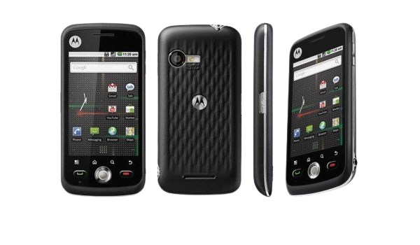

CELULARES ANTIGOS

Marca motorola
A primeira vez 2010, julho. Lançado em 2010, agosto
Tamanho 114,9 x 56,8 x 12,6 mm, 80 cc (4,52 x 2,24 x 0,50 pol) [1]
Peso 114 g (4,02 onças)
Sistema operacional Android 1.6 (rosquinha)
CPU 600 MHz ARM 11
GPU Adreno 200
Armazenar 512 MB, 256 MB RAM
Remoção de armazenamento microSD, até 32 GB (slot dedicado)
Bateria Bateria Li-Po removível de 1270 mAh
Roupas Tela sensível ao toque capacitiva TFT, 256K cores
320 x 480 pixels, proporção 3:2 (~180 ppi densidade)
Câmera traseira 3,15 MP, flash LED
Câmera frontal Não
Voz Vibração; Toques MP3, WAV
Conectividade Bluetooth 2.0, A2DP, EDR